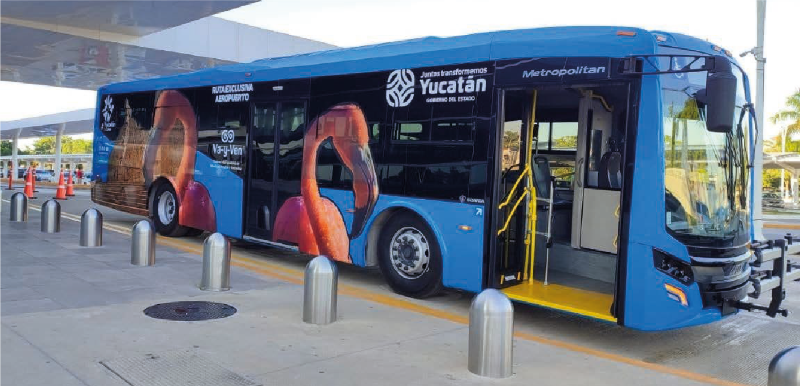

Como GNC (comprimido) o GNL (licuado), el biometano sustituye diésel y gasolina en flotas de carga, autobuses urbanos y operaciones logísticas — manteniendo la infraestructura de gas natural existente.

Vehículos GNC operan con biometano sin modificación.
Soporte a objetivos de sustentabilidad de flotas corporativas.
Combustión más limpia que diésel en zonas urbanas.
Producción local reduce exposición a importación.
Diseñamos abasto continuo de biometano para tu operación.